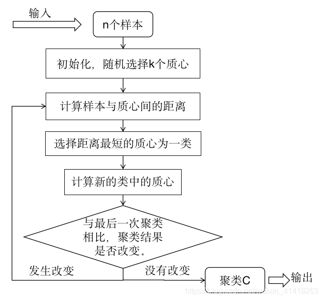

K-means聚类
K均值聚类（k-means）是基于样本集合划分的聚类算法。K均值聚类将样本集合划分为k个子集，构成k个类，将n个样本分到k个类中，每个样本到其所属类的中心距离最小，每个样本仅属于一个类，这就是k均值聚类，同时根据一个样本仅属于一个类，也表示了k均值聚类是一种硬聚类算法。
基本步骤
假设有n个样本，m表示样本维度(指标变量)，k表示聚类个数。
1、一般情况下，为消除数据量纲的影响，会对数据先进行标准化处理
其中\(i=1,2,3,\dots,n\); \(j=1,2,3,\dots,m\); \(\bar a_j=\frac{1}{n}\sum_{i=1}^{n}a_{ij}\); \(s_j=\sqrt{\frac{1}{n-1}\sum_{i=1}^n(a_{ij}-\bar a_j)^2}\)
2、在n个样本中随机选取K个，对应的m个指标值做初值向量。记为K个初值聚类中心\({\{u_1,u_2,\dots,u_k}\}\)。
其中\(u_k={b_{i1},b_{i2},\dots,b_{im}}\),i为所选K个初始聚类中心所在的行索引。
3、针对初始化选择的聚类中心，计算所以样本到每个中心的距离，按照最小距离原则分配到最邻近聚类，一般采用欧氏距离。
其中\(x_i\)代表任意一个样本，计算出的距离越小，说明它与聚类中新\(u_k\)的相似性越高，反之距离越小，差异度较大。
4、计算每个聚类中所有点坐标的平均值，并将这个平均值作为新的聚类中心。
其中\(i=1,2,\dots,k\)
5、反复执行上述步骤，直到聚类中心不再发生变化或达到设定的迭代次数，距离误差相对较小，最终得到聚类结果。 计算样本到最近聚类中心的距离总和，做为误差准则。
具体流程图：

实例
已知2010年14家银行信息，对其进行K-means聚类。

1、为提高聚类结果的准确性，可以先利用肘部法或轮廓系数法确定最优聚类簇数k。下文采用肘部法。
inertias:其是K均值模型对象的属性，表示样本距离最近的聚类中心的总和，它是作为在没有真实分类标签下的非监督式评估指标， 该值越小越好，值越小证明样本在类间的分布越集中，即类内的距离越小。
import pandas as pd
import numpy as np
import matplotlib.pyplot as plt
from sklearn.preprocessing import StandardScaler
from sklearn.cluster import KMeans
from sklearn.decomposition import PCA
df = pd.read_excel('/数学建模/暑假培训/三年数据.xlsx',sheet_name='2010年',index_col=0)
columns = df.columns
index = df.index
data = np.array(df)
data_mean = np.mean(data,axis=0)
data_std = np.std(data,axis=0) #计算每一列的标准差
data1 = (data-data_mean)/data_std
# pca = PCA(n_components=2)
# pca_data = pca.fit_transform(data1)
# print(data1)
# print(StandardScaler().fit_transform(data)) 标准化结果相同，对列标准化，对行用转置
# 确定k值
k = np.arange(1,8)
jarr = []
fig = plt.figure()
for i in k:
model = KMeans(n_clusters=i)
model.fit(data1)
jarr.append(model.inertia_)
plt.plot(k,jarr,'bx-')
plt.xlabel('K值',fontproperties='SimHei')
plt.ylabel('聚类误差E',fontproperties='SimHei')
plt.title('K均值聚类肘部图',fontproperties='SimHei')
plt.show()
2、进行K均值聚类。
import pandas as pd
import numpy as np
import matplotlib.pyplot as plt
from sklearn.preprocessing import StandardScaler
from sklearn.cluster import KMeans
df = pd.read_excel('/数学建模/暑假培训/三年数据.xlsx',sheet_name='2010年',index_col=0)
columns = df.columns
index = df.index
data = np.array(df)
data_mean = np.mean(data,axis=0)
data_std = np.std(data,axis=0) #计算每一列的标准差
data1 = (data-data_mean)/data_std
K = 4
model1 = KMeans(n_clusters=K)
model1.fit(data1)
Muk = model1.cluster_centers_
print(Muk) #聚类中心坐标
ui = model1.predict(data1)
u1,u2,u3,u4 = [],[],[],[]
for i,j in enumerate(ui):
if j==0:
u1.append(index[i])
elif j==1:
u2.append(index[i])
elif j==2:
u3.append(index[i])
elif j==3:
u4.append(index[i])
print("第一类:",*u1)
print('第二类:',*u2)
print('第三类:',*u3)
print('第四类:',*u4)
plt.figure()
plt.scatter(data1[:,0],data1[:,1],c=ui,cmap=plt.cm.Paired)
plt.scatter(Muk[:,0],Muk[:,1],marker='*',s=60)
#给这几个点打标
for i in range(K):
plt.annotate(f'第{i+1}类',(Muk[i,0],Muk[i,1]),fontproperties='SimHei')
plt.show()
[[ 2.35207782 1.77651927 1.25672422 1.90687569 1.41346835 2.09315217
0.93586501 -0.8058846 1.52747097 1.23693717 1.40644991]
[-0.60020674 -0.61485892 -0.60708853 -0.60797648 -0.61144243 -0.61179814
-0.59506333 -0.36483604 -0.60722762 -0.60999079 -0.60854734]
[ 0.88895831 1.07910013 1.25682796 0.88760693 1.12157491 1.0070794
0.99843684 3.35024509 0.88022714 1.31631523 0.96357678]
[ 1.38051564 1.6464849 1.77866656 1.64264107 1.7896905 1.50887493
2.00816572 0.55199997 1.83228906 1.77332772 1.85772336]]
第一类: 农业银行
第二类: 交通银行 招商银行 光大银行 中信银行 广发银行 华夏银行 民生银行 平安银行 浦发银行 兴业银行
第三类: 中国银行
第四类: 工商银行 建设银行